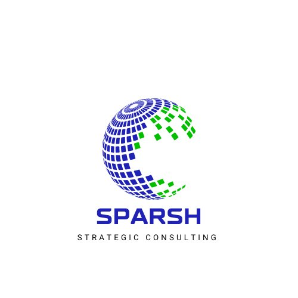

SQIP is a patent-pending platform for Quality Reasoning Governance. It is the intelligence layer above regulated quality systems—designed to make first-time-right execution structural, not optional.
Across pharma, MedTech, and clinical research, a vast estate of systems captures the artefacts of quality work: deviations logged, CAPAs filed, audits documented, inspections passed.
These systems are systems of record. They preserve what happened. They do not interrogate whether the underlying reasoning was sound, whether the root cause stated is the root cause that actually explains the failure, whether the corrective action is structurally aligned to the mechanism at fault.
The result is an industry where defensible-looking documents conceal hollow reasoning. Where the same failure modes recur because the analysis closed before the cause was actually understood. Where inspection findings cluster around the same structural gaps, year after year.
The problem is not that the industry lacks systems. The problem is that no system governs the reasoning above them.
A finding closes. A document signs. The reasoning that produced it is never examined. The cycle repeats.
From the foundational thesis · Quiet Watchdogs · Pasumamula 2025
SQIP introduces a category that does not exist in the current regulated-industry stack. It is not a QMS. It is not an eTMF. It is not a deviation tracker, a CAPA engine, or an inspection management tool. Those systems already exist, and SQIP does not replace them.
SQIP operates one layer above. It reads what those systems already contain, and it governs the reasoning that produces conclusions about that data. It is the intelligence layer that asks not what was decided, but whether the decision is structurally defensible.
The category is new because the question is new. Until now, no platform has been built specifically to govern how reasoning is constructed in regulated quality work. SQIP is the first.
The same observation appears across multiple cycles. Closure was procedural, not structural.
The declared cause sits at the wrong level of abstraction. The mechanism remains uncharted.
Action is taken on a symptom while the underlying system that produced it stays unchanged.
A box is ticked at thirty days. The question of whether the failure is now structurally blocked is never asked.
Regulators identify patterns invisible from inside the organisation. The same reasoning failures keep producing them.
Quality signals exist months before they become findings. They are not connected, and they are not governed.
Inspectors see the artefact, not the analysis that produced it. The reasoning trail does not exist as a structural object.
Governs how root cause is constructed. Produces conclusions that are structurally defensible to inspectors and aligned to the mechanism that produced the failure.
Determines whether a proposed action is permitted to advance—based on its structural alignment to the cause, not on procedural completeness.
Surfaces the reasoning gaps an inspector will find before they become findings. Pre-inspection signal detection across the GxP estate.
Detects the quality signals that recur across investigations, vendors, and sites. Names the structural patterns invisible from inside a single case.
Provides regulatory and methodological context inline with the work. Answers grounded in evidence; gaps surfaced where evidence is absent.
Governs the reasoning behind vendor risk decisions—qualifications, oversight, escalations. Connects signals across the partner estate.
Preserves the reasoning, not just the documents. Makes prior analyses interrogable across investigations, programmes, and years.
Reads across investigations to detect programme-level versus site-level patterns. Distinguishes isolated failures from systemic ones.
The platform is operational, the patent is filed, and the architecture has been validated against representative regulated investigations spanning multiple GxP domains.
All eight modules live on the platform — covering RCA, CAPA, Inspection, Risk, Advisory, Vendor, Memory, and Oversight.
Architecture validated across GCP, GMP, GLP, GVP, GCLP, and GDP regulatory frameworks.
Reasoning governance applied across thirty-one representative quality investigations to date.
IPOS Singapore · Provisional application accorded date 16 April 2026 · Sole inventor.
SQIP defines itself by what it does and by what it explicitly refuses to be. The boundary is structural.
SQIP sits above your systems—never inside them, never instead of them.
SQIP does not compete with your QMS. It governs the reasoning above it.
Architecture, demonstration, and platform access are shared only after NDA execution. We are selective about who we engage with; we expect the same selectivity from prospective partners.
A focused session with the founder. We share the thesis, walk through the platform, demonstrate live reasoning governance on a representative case, and discuss whether SQIP fits the question you are trying to answer.
For sponsors and CROs willing to integrate real investigations, provide named reference on outcomes, and shape the next phase of the platform alongside us. Limited to two partners.
All engagement begins with a one-page NDA · Architecture, mechanisms, and platform access shared only after execution · No exceptions
The book that named the gap SQIP was built to close
Founder · CEO · Sole Inventor
Twenty-five years in GxP Quality Assurance across the Asia Pacific region. Direct engagement experience with the PMDA, FDA-aligned inspection readiness work, and quality leadership across sponsor and CRO organisations.
Author of Quiet Watchdogs: The Unsung Heroes of GxP—the book that diagnosed the structural reasoning gap in regulated quality systems and named the question SQIP was built to answer.
SQIP is a solo-founded platform. Architecture, patent claims, and product direction are held by the inventor. The platform was built without external capital and is being prepared for selective design partner and strategic engagement in 2026.
